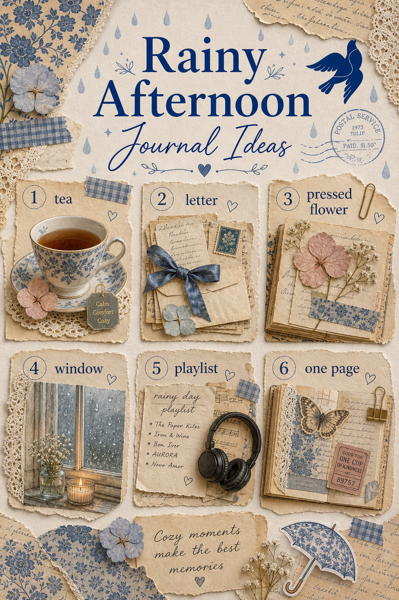
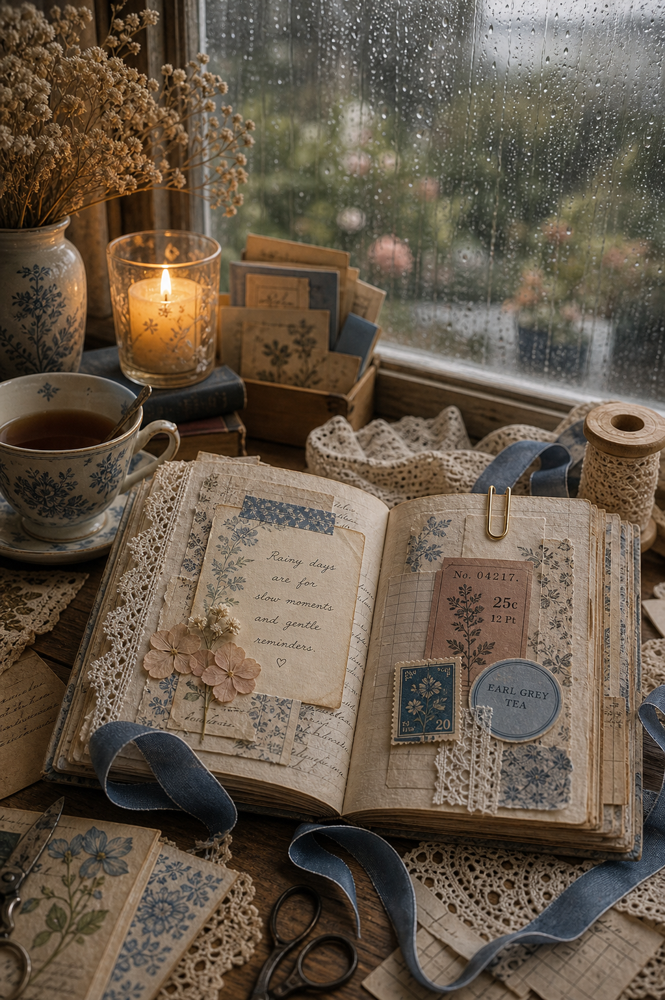

A rainy afternoon already has the rhythm of a journal page: repeated sounds, softened light, small domestic objects, and nowhere urgent to go. Instead of waiting for a dramatic story, record the room you are in. One cup, one window, and one honest sentence can be enough.

Record the weather in three words
Look through the window and avoid the first words that arrive. Instead of simply writing “grey” or “wet,” notice how the light behaves. Is it pearly, blurred, metallic, or green at the edges? Write three words on a narrow strip and date it. That strip can become the title of the page.
Build a pocket of grey
Gather neutral scraps that usually get ignored: a receipt, tea tag, envelope lining, tissue, thread, and the back of a label. Arrange them from palest to darkest. A restricted palette turns ordinary paper into a quiet material study.
Make a simple pocket from one folded book page and keep the loose pieces inside. You can finish the spread later; collecting is already part of the journaling.
Draw a sound map
Place a small dot in the centre of the page for where you are sitting. Add words around it according to direction and distance: rain at the window, pipes in the wall, a car passing, a kettle clicking off. Use larger writing for near sounds and smaller writing for distant ones.

Make one page in cloud, slate, and ink
Choose three colours and refuse everything else for twenty minutes. Use cream or cloud white as the base, slate blue as the middle tone, and deep ink for contrast. If the page feels flat, change texture rather than adding another colour: smooth vellum, torn tissue, rough paper, or one line of stitching.
Invent a tiny shelter
Draw or collage a room you would happily hide inside while the rain continues. Give it one window, one chair, and one impossible detail. Perhaps the shelves remember every book, the kettle never empties, or the door opens into a forest. Add a short description as though the shelter were listed in an old travel guide.
Write the after-rain note
When the sound changes, write one thing that feels clearer. It can be practical, emotional, or very small. Fold the note and place it inside the grey pocket. The page now holds both the weather and what shifted while you listened.
If the afternoon stays wet, add a second observation later without correcting the first. Place it beneath the original note in a different pencil or pen. The two entries will show how attention changed over a few hours, which is often more revealing than trying to summarise the entire day at once.
You do not need to complete all six ideas. Pick the one that matches your energy and let the day set the pace. More gentle prompts are waiting in the Sentimentalica journal archive.